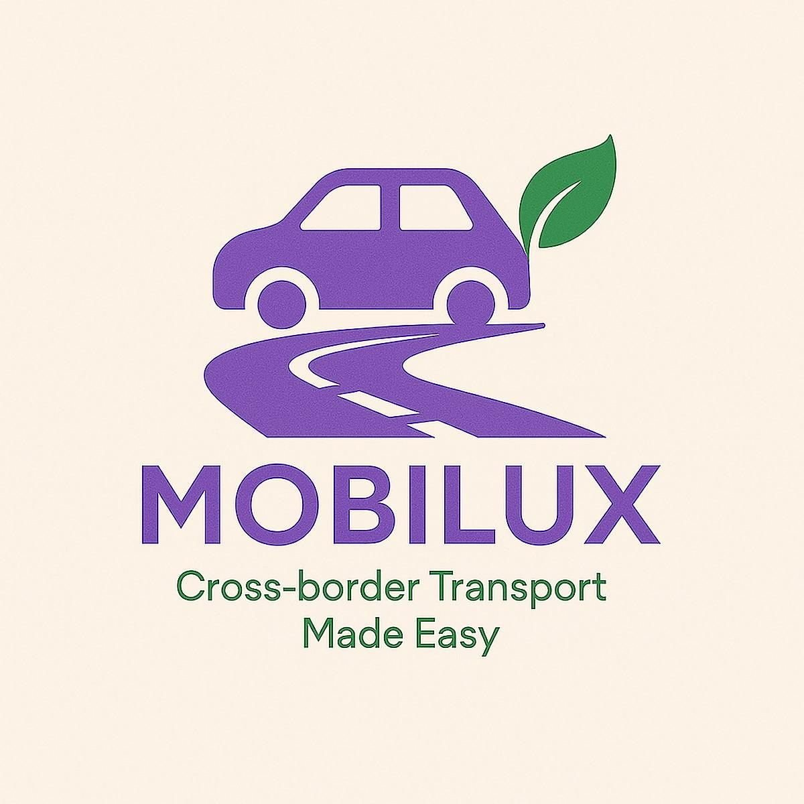
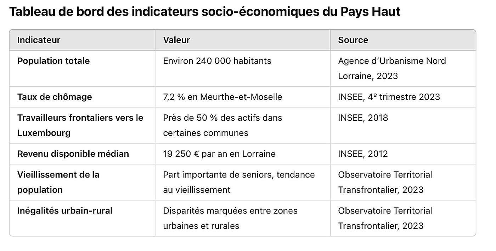
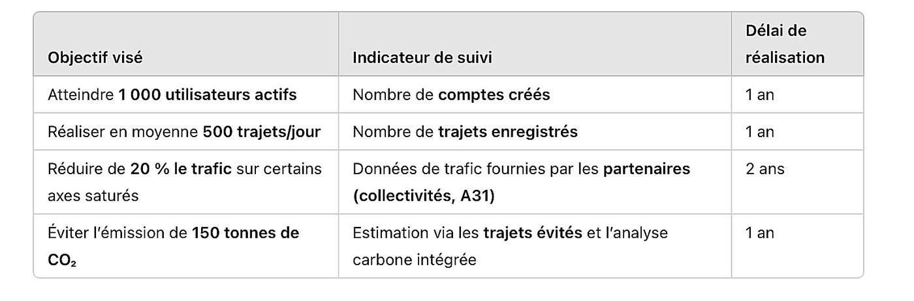
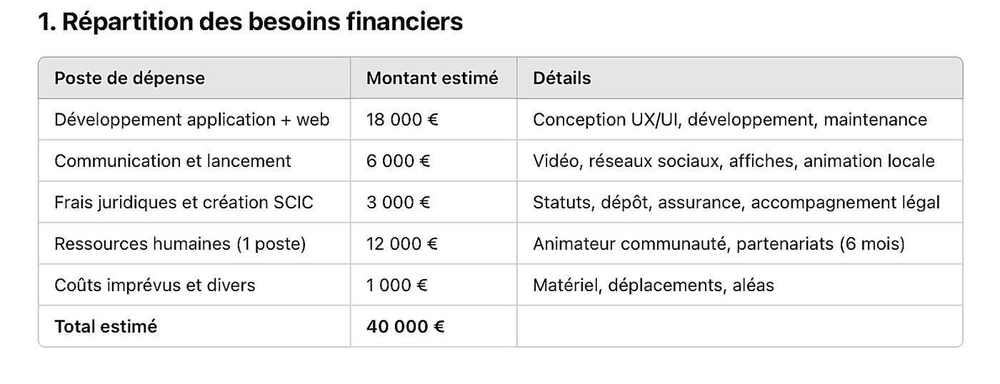
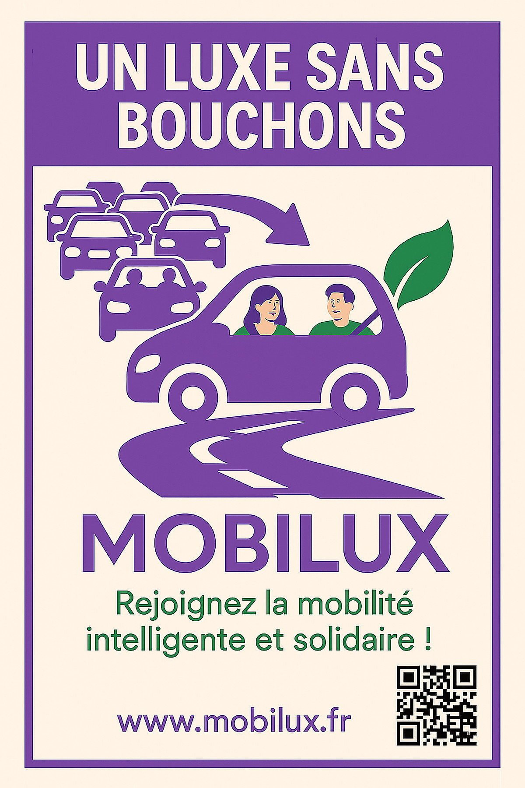

120 000frontaliers concernés
40 000 €de besoin de financement
1 000utilisateurs visés la 1re année
3ans pour l’équilibre financier
Le contexte et la commande
- SAE S4.01 : participer à la création d’une organisation relevant de l’économie sociale, solidaire et circulaire.
- Terrain : le Pays-Haut, territoire frontalier où 120 000 personnes traversent chaque jour la frontière luxembourgeoise, dont 80 % en voiture individuelle.
- Constat de départ : embouteillages chroniques, transports en commun mal connectés aux bassins d’emploi et absents en zone rurale.
La problématique
Proposer un projet réaliste, ancré localement, répondant à une problématique sociale et environnementale, en s’appuyant sur les principes de l’économie sociale, solidaire et circulaire.
Le constat
- Environ 120 000 frontaliers traversent chaque jour la frontière vers le Luxembourg, dont 80 % en voiture individuelle, pour un trajet aller-retour de 1 h 30 à 2 h.
- Embouteillages chroniques sur l’axe Mont-Saint-Martin ↔ A31, transports en commun mal connectés aux bassins d’emploi et absents en zone rurale.
- Aucune plateforme locale structurée de covoiturage dédiée aux frontaliers n’existait.


La solution
- Mise en relation conducteurs et passagers sur les trajets domicile-travail transfrontaliers.
- Optimisation des trajets en temps réel selon la circulation, les horaires et les habitudes.
- Système de récompense : écopoints et bons de réduction chez des partenaires locaux.
- Navettes de rabattement depuis les zones rurales et parkings relais sécurisés.


Le modèle économique
- Forme juridique SCIC — Société Coopérative d’Intérêt Collectif, gouvernance « une personne = une voix ».
- Revenus : abonnement premium, publicité responsable locale, subventions Interreg, FEDER, Région Grand Est et ADEME, forfait mobilité souscrit par les employeurs.
- Objectifs : 1 000 utilisateurs actifs la première année, 500 trajets quotidiens à 12 mois, équilibre financier visé à 3 ans.
- Cadre légal : loi LOM de 2019, conformité RGPD, partenariats avec les collectivités.

Ce que j’ai produit
- Tableau de bord des indicateurs socio-économiques du territoire, construit à partir de données INSEE, AUNL et Observatoire Transfrontalier.
- Modèle économique complet : SCIC, gouvernance « une personne = une voix », abonnements, publicité locale responsable et subventions Interreg, FEDER, Région Grand Est et ADEME.
- Répartition du besoin financier de 40 000 € : développement de l’application, communication, frais juridiques, ressources humaines et imprévus.
- Identité visuelle, affiche A4 de communication et objectifs de suivi assortis d’indicateurs et de délais.
Ce que j’en retire
- Construire un projet ancré dans un territoire, à partir de données réelles et vérifiables.
- Comprendre les spécificités juridiques et financières de l’économie sociale et solidaire.
- Articuler utilité sociale, viabilité économique et conformité réglementaire — loi LOM, RGPD.
Outils et méthodes mobilisés
Statut SCICDonnées INSEEPlan de financementIndicateurs de suiviCanva